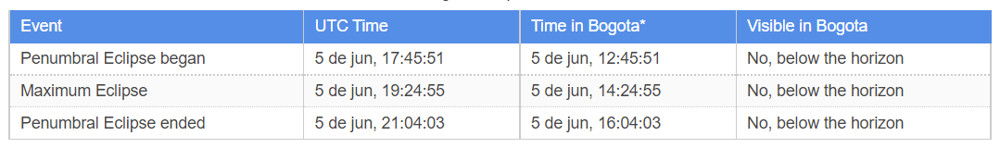
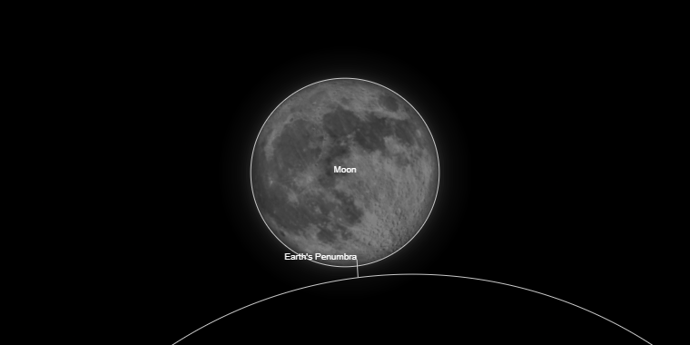
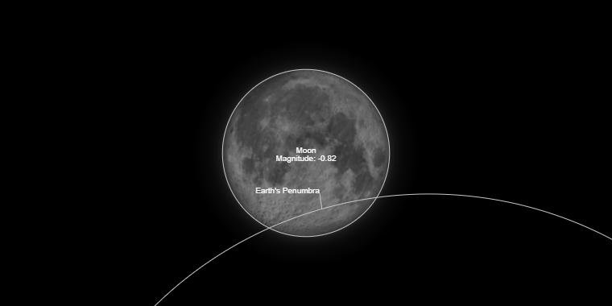
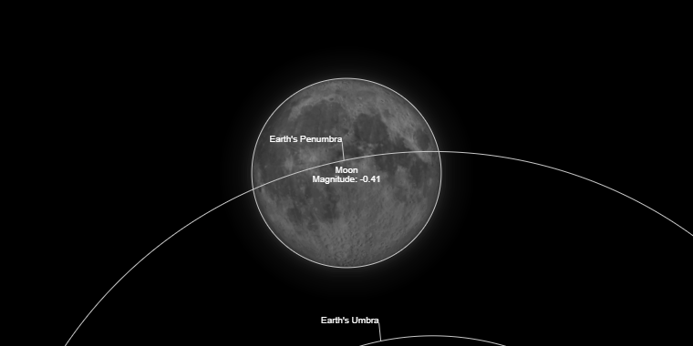
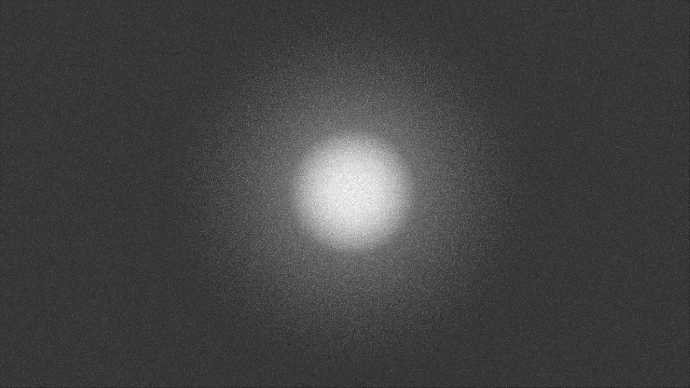
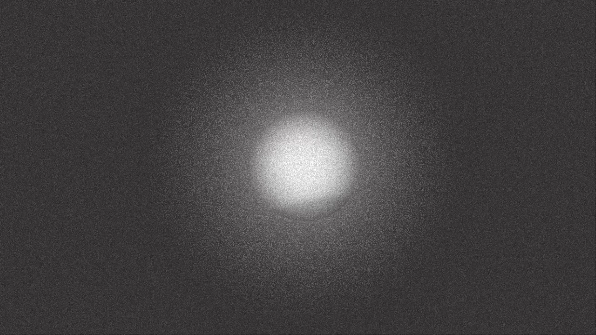
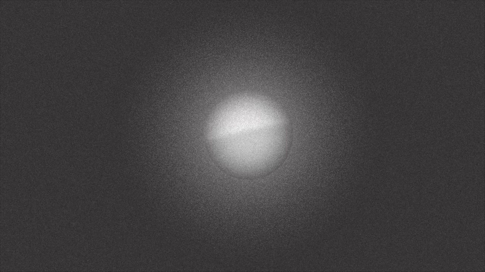

Fig. 01 · Eclipse Lunar Penumbral · Transmisión EEK · 5 junio 2020 Fig. 01 · Penumbral Lunar Eclipse · EEK Streaming · June 5 2020
En 2020, durante la cuarentena, el barrio Kennedy estaba aislado. El perímetro era custodiado por soldados y policías. Era imposible salir. En ese contexto, ocurrió un eclipse lunar penumbral, pero debido a la ubicación geográfica de Colombia no fue visible desde el territorio nacional.
Estación Espacial Kennedy fue creada como respuesta: una herramienta de apropiación espacial y tecnológica a través de instrumentos de ficción. Se transmitió una simulación del eclipse en YouTube para las personas encerradas en Kennedy, al mismo tiempo que ocurría el fenómeno real.
Eclipse Lunar Penumbral es una transmisión en vivo que simuló el eclipse ocurrido el 5 de junio de 2020. La animación fue diseñada siguiendo el patrón de oscurecimiento real del eclipse, creada en Illustrator y animada en After Effects.
El diseño sonoro fue construido en un 90% con audios de la radio UVB-76, una estación rusa que transmite una frecuencia monótona de 4635 KHz desde hace más de 40 años. Los audios fueron curados seleccionando grabaciones de diferentes 5 de junio de diferentes años, mezclados con audios de WhatsApp enviados en 2020 sobre la situación del barrio Kennedy durante el confinamiento.
In 2020, during the quarantine, the Kennedy neighborhood was isolated. The perimeter was guarded by soldiers and police. It was impossible to leave. In this context, a penumbral lunar eclipse occurred, but due to Colombia's geographic location it was not visible from the national territory.
Kennedy Space Station was created as a response: a tool for spatial and technological appropriation through fictional instruments. A simulation of the eclipse was streamed on YouTube for the people locked up in Kennedy, at the same time the real phenomenon occurred.
Penumbral Lunar Eclipse is a live stream that simulated the eclipse that occurred on June 5, 2020. The animation was designed following the real darkening pattern of the eclipse, created in Illustrator and animated in After Effects.
The sound design was built with 90% audio from UVB-76 radio, a Russian station that transmits a monotonous frequency of 4635 KHz for more than 40 years. The audio was curated by selecting recordings from different June 5ths from different years, mixed with WhatsApp audios sent in 2020 about the situation of the Kennedy neighborhood during the lockdown.
La animación fue diseñada siguiendo el patrón de oscurecimiento real del eclipse. La forma de la sombra penumbral fue dibujada en Illustrator y animada en After Effects, sincronizando cada fase con los tiempos exactos del fenómeno astronómico.The animation was designed following the real darkening pattern of the eclipse. The penumbral shadow shape was drawn in Illustrator and animated in After Effects, synchronizing each phase with the exact times of the astronomical phenomenon.

Fig. 1 · Datos del eclipse lunar penumbral · 5 junio 2020 · timeanddate.com Fig. 1 · Penumbral lunar eclipse data · June 5 2020 · timeanddate.com






Fig. 2–7 · 3 momentos de la trayectoria real y su versión animada Fig. 2–7 · 3 moments from the real trajectory and their animated version
El sonido fue construido en un 90% con audios de la radio UVB-76, una estación rusa que transmite una frecuencia monótona de 4635 KHz desde hace más de 40 años. Los audios fueron curados seleccionando grabaciones de diferentes 5 de junio de diferentes años, y mezclados con audios de WhatsApp enviados en 2020 sobre la situación del barrio Kennedy durante el confinamiento.The sound was built with 90% audio from UVB-76 radio, a Russian station that transmits a monotonous frequency of 4635 KHz for more than 40 years. The audio was curated by selecting recordings from different June 5ths from different years, mixed with WhatsApp audios sent in 2020 about the situation of the Kennedy neighborhood during the lockdown.
La transmisión se realizó en YouTube en vivo el 5 de junio de 2020 desde las 12:45 hasta las 16:04 UTC-5, exactamente al mismo tiempo que ocurría el eclipse real. Fue un acto político y artístico: llevar un fenómeno celeste invisible al territorio de quienes estaban encerrados.The stream was broadcast on YouTube Live on June 5, 2020 from 12:45 to 16:04 UTC-5, exactly at the same time as the real eclipse. It was a political and artistic act: bringing an invisible celestial phenomenon to the territory of those who were locked up.
La transmisión completa está disponible en YouTube: The complete stream is available on YouTube:

Transmisión en vivo · 5 junio 2020 · YouTube Live stream · June 5 2020 · YouTube